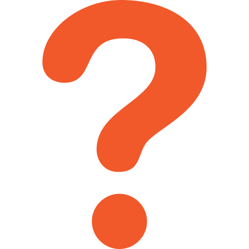
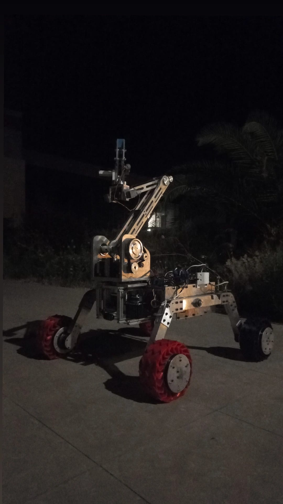

.png) CENGAVER ROVER
CENGAVER ROVER
CENGAVER ROVER
CENGAVER ROVER

Üçüncü nesil roverımız TALOS, önceki iki aracımızdan edindiğimiz tüm saha tecrübesinin üzerine inşa edildi. Ocak 2026'da mekanik ve elektronik tasarımı tamamlanarak üretim sürecine geçildi. European Rover Challenge (ERC) hedefiyle geliştirilen TALOS'ta otonomi kabiliyeti, dayanıklılık ve görev esnekliği ön planda tutuluyor. Takımımız bünyesinde kabul edilen 5 adet TÜBİTAK 2209-A projesinin çıktıları da bu araca entegre ediliyor.

European Rover Challenge (ERC) hedefleri doğrultusunda baştan aşağı yenilenen sistem mimarisi. En dikkat çekici özelliklerinden biri, TÜBİTAK 2209 projesi kapsamında geliştirdiğimiz ve hava destekli keşif görevleri için tasarlanan rover'a entegre drone sistemidir. Otonomi, modüler yapı ve hafiflik ön planda tutulmuştur.

Ekibimizin ürettiği ilk prototip olan Cengaver 1.0, Anatolian Rover Challenge (ARC '23) yarışmasında boy göstermiş ve saha tecrübemizin temelini oluşturmuştur. 6 tekerlekli yapısı ve güçlü şasisiyle zorlu arazi koşullarında test edilmiştir.